Sandbox is a costed walkthrough of how a retail chain with a £54.8m pay bill turns its apprenticeship levy into managers over five years — on published standards and the funding rules as they stand today.
It is built wide on purpose, and a narrowed version would be a worse page pretending to be the same one. Open it on a laptop or a desktop and it runs in full.
Needs 1024px or wider.
A retail chain. Forty-two stores, a £54.8m pay bill,
and five years to build its own managers.
Where does the money actually go?
Brayford Stores is invented. Everything else — the levy arithmetic, the funding bands, which apprenticeships you can still buy — is real and dated. Each step unlocks the next, and every narrowing shows its working.
Brayford employs 1,340 people across 42 stores, paid at the UK average salary. The levy is charged on the whole pay bill — not just salaries above a threshold — so it is usually a bigger number than employers expect. Move it if you like; the story continues either way.
That average is the wrong one for retail, and it matters. The published figure covers full-time staff in post a year or more. A real chain this size runs on part-time hours and high turnover, so its pay bill per head — and its levy — would be smaller. Brayford uses the national average because it is published and checkable, not because it flatters the story.
Every rate and threshold above is read from the governed rulebook when the page loads, not written into this page — so when one changes, this changes with it. The £3m threshold is not a separate rule either: it is the pay bill at which the allowance exactly cancels the levy, so it is derived rather than typed.
This is the monthly path, because that is the one HMRC actually runs. The allowance is a twelfth each month, worked out cumulatively across the tax year, with unused allowance carried into the next month but never into the next year. Annual pay bill minus £15,000 reaches the same answer for a steady employer — and is not how it is calculated, which on this page matters.
Not a pot you draw on whenever you like. It arrives monthly, and it expires twelve months after it lands, oldest first.
Ten people one rung below management. Pick three. Nobody has to be good at managing to start learning it — that is what the apprenticeship is for. The bar is opportunity, not competence: an apprentice is assessed on work they actually do, so the role has to let them practise it somewhere. Which of them has potential is your call, and this tool will not guess at it. Some of these ten have jobs that give an assessor nothing to look at yet. Click one to see why — and what would change it.
The last line is us. Brayford is invented, so these ten are written, not filtered out of a real workforce. The rows above describe how such a shortlist would be drawn in a real store; the ten names are authored.
Built next.
Built next.
Built next.
Built next.